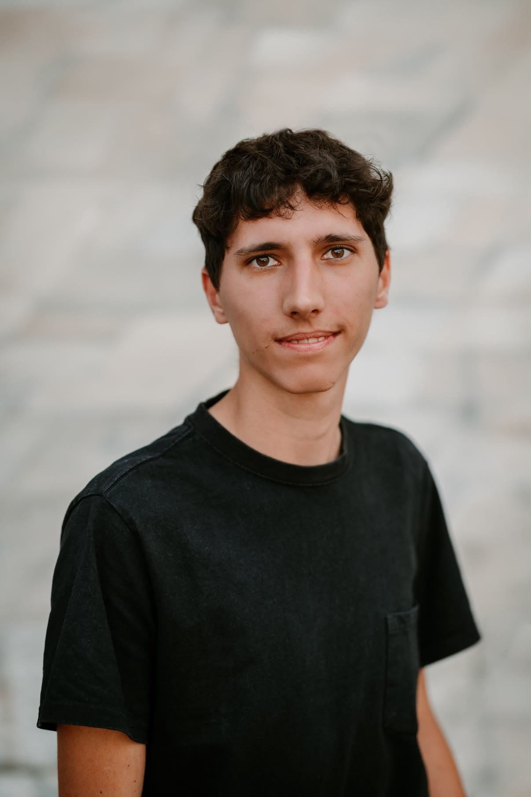

Niečo o mne

Volám sa Miroslav Chodúr a som študentom aplikovanej informatiky na Fakulte elektrotechniky a informatiky Slovenskej technickej univerzity v Bratislave (FEI STU).
Mojim cieľom v budúcnosti je sa uplatniť v IT sektore.
Vo voľnom čase sa najradšej venujem športom, či už aktívne alebo ich sledovaním.
Kľúčové oblasti
- Frontend: HTML5, CSS3, Vanilla JavaScript
- Programovanie: Python, C
- Šport
„STAY HARD“